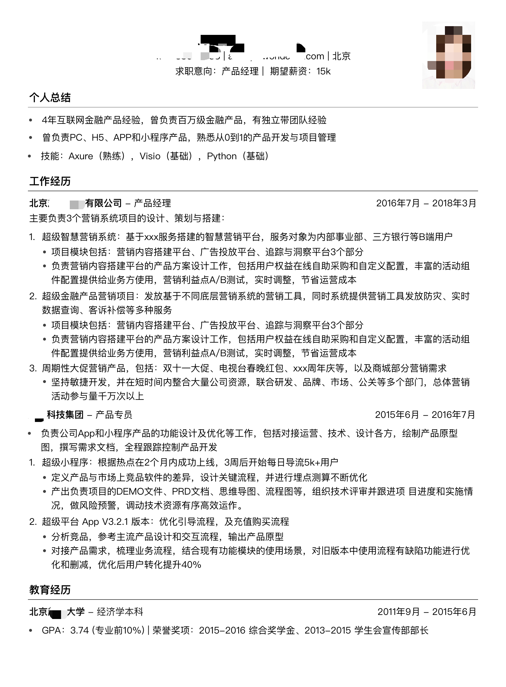
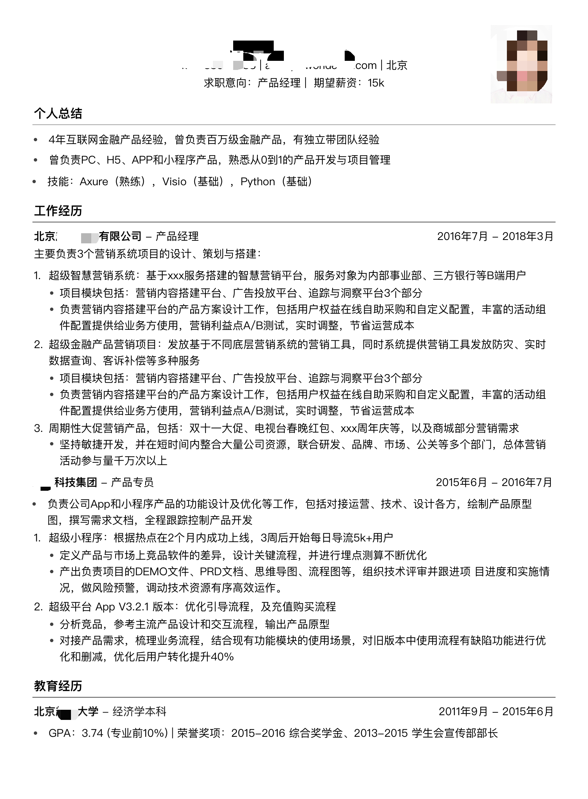

6.1.5. 简历 CV¶
 

6.1.5.1. LinkedIn and GitHub¶
https://career-resource-center.udacity.com/linkedin-github-profiles
6.1.5.2. CV VS Resume 5¶
Resume，简述于求职相关的教育背景和工作经历，其目的在于说服用人单位雇用自己；
CV，Curriculum Vitae事集中说明学术工作，不重视与文化程度和学习成绩无直接关系的资料，包括更多的证书、出版物、论文等成就；
Cover letter是一种介绍自己的方式，去陈述一些简历无法完全展示的细节内容，来描述申请人的兴趣和资历。
6.1.5.3. 设计一份与众不同的简历 2¶
简历不是写出来的，而是设计出来的，介绍如何设计一份与众不同的简历、如何在众多模板简历中脱颖而出、如何让简历真的成为敲门砖、如何在1分钟内打动面试官、简历都有哪些投递的方式等。
6.1.5.4. 简历命名¶
带职级的岗位（求职意向）、行业、工作年限
高级产品经理-隔壁老王-B端金融-6年。
从基本描述的已知信息中，获取到产品经理的个人标签，以便初步判断是否具有核心竞争力。 6
6.1.5.5. 0-1创业¶
好好想想你所学的技术可以应用在哪个行业的哪个环节，可以帮助这个行业或者是某一个企业降低成本、提高效率？
想象一下普通的用户是如何使用你的技术完成某项工作？
把想象到的东西全部写出来画出来，整理为流程图、结构图、原型图
着手开发吧，服务端和前端写的糙一点也没关系，实在不会的话就找几个接私活的，把你的需求和他们讲一遍
开发出来的东西肯定又难用又难看，找几个会说真话的朋友挑挑毛病，再改改
根据第一点，去找某个行业中的某个企业，推销自己的产品
卖出去了的话，你就可以开始集资创业了
卖不出去的话，你有了0-1的创业经验了
把1-5写出来，就是最好的简历
6.1.5.7. 原则¶
突出原则：条理清楚、重点突出、详略得当。优先级原则：根据企业岗位需求，个人经历，适当排序。
精简原则：把HR最想看的和自己最想展现的写出来。
数据原则：在内容上，能用数据表示的一就用数据表示。
细节原则：简历中不要出现错别字，不要忘写电话，不要写错邮箱，等等。
诚信原则：做人做事都要讲究一个诚信，简历亦是如此。7
6.1.5.8. 问题 1¶
简历过度包装
简历过分冗长：抓主要放次要，为什么做这个产品，这个产品解决了什么问题，你在其中扮演了什么角色，做出了哪些重要策略，算法模型存在哪些劣势。
内容含糊不清
数据敏感度差：数据指标的说明（包括基础指标和对比指标），并且自己对指标有深刻的合逻辑的理解。
借用他人的成果
不诚实：从业经验从社保缴纳记录、银行工资流水、个人完税证明等多个方面都可以佐证
6.1.5.9. 简历筛选与沟通¶
作为面试官，会先快速阅读：相关经验、公司经历、教育背景等信息
相关经验按照 STAR 分析法，公司经历主要是否是互联网公司，是否一线互联网公司。如果有经历，一定要写，因为有的是结果导向，有的是过程导向差别很大。同时要关注候选人做过的事情，是面向互联网用户的还是面向公司内部用户的，因为面向互联网用户更关注用户体验这些细节部分，后者则更多强调通用性、拓展性，以及开发效率。
教育背景主要作为参考。
对候选人来说，自己的职责、做的事情、取得的成绩一定要写清楚，说白了就是目的性要强、重点要突出，要让面试官很快能把握到：你的公司做的产品是什么样的，模式是什么样的，你取得的成绩是业绩、指标提升了还是效率提高了，这样才能快速把握你的亮点。